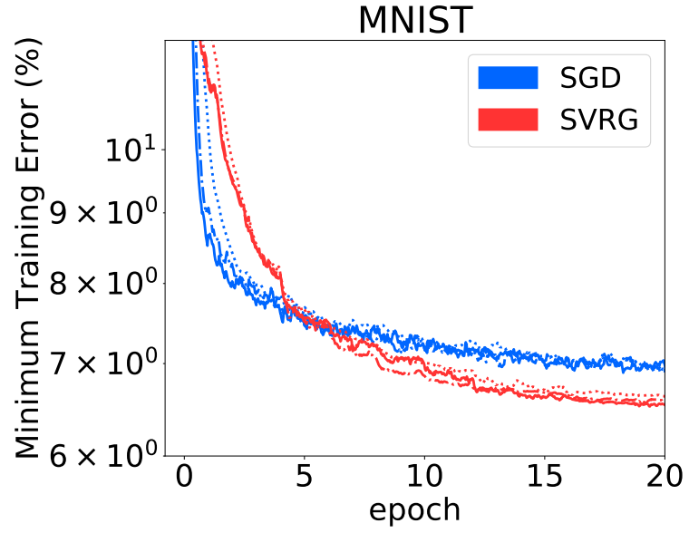
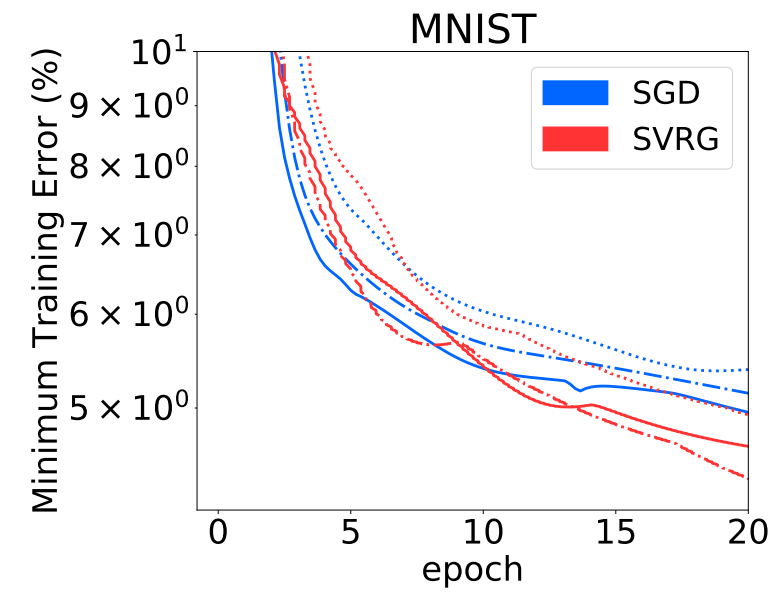
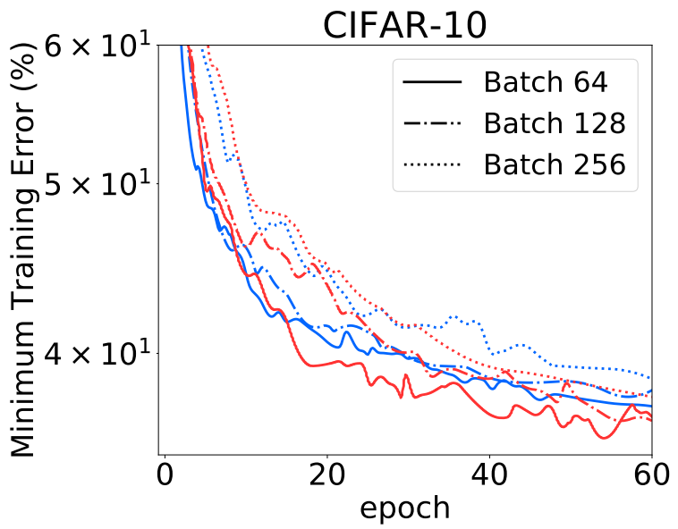
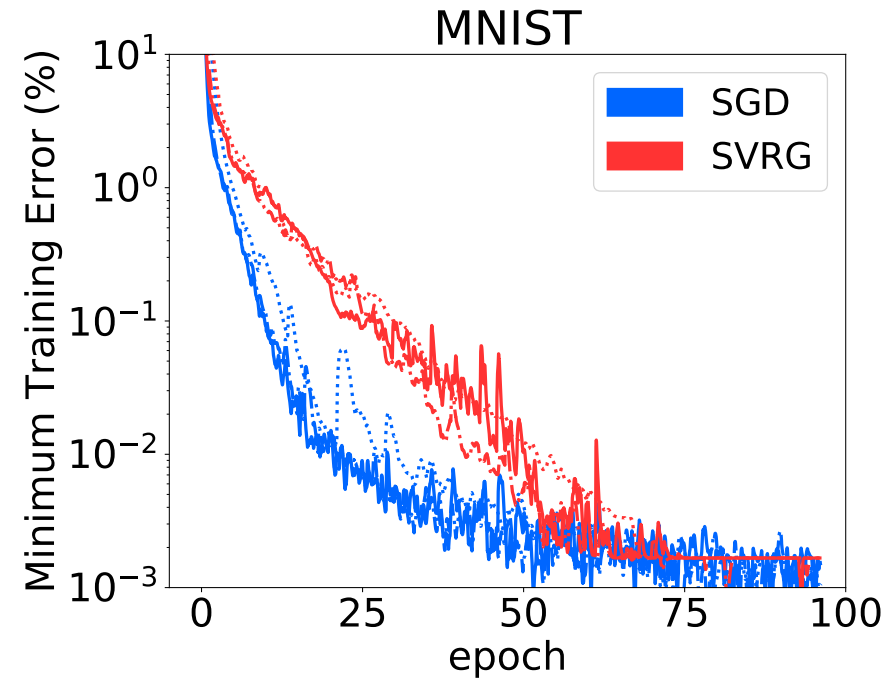
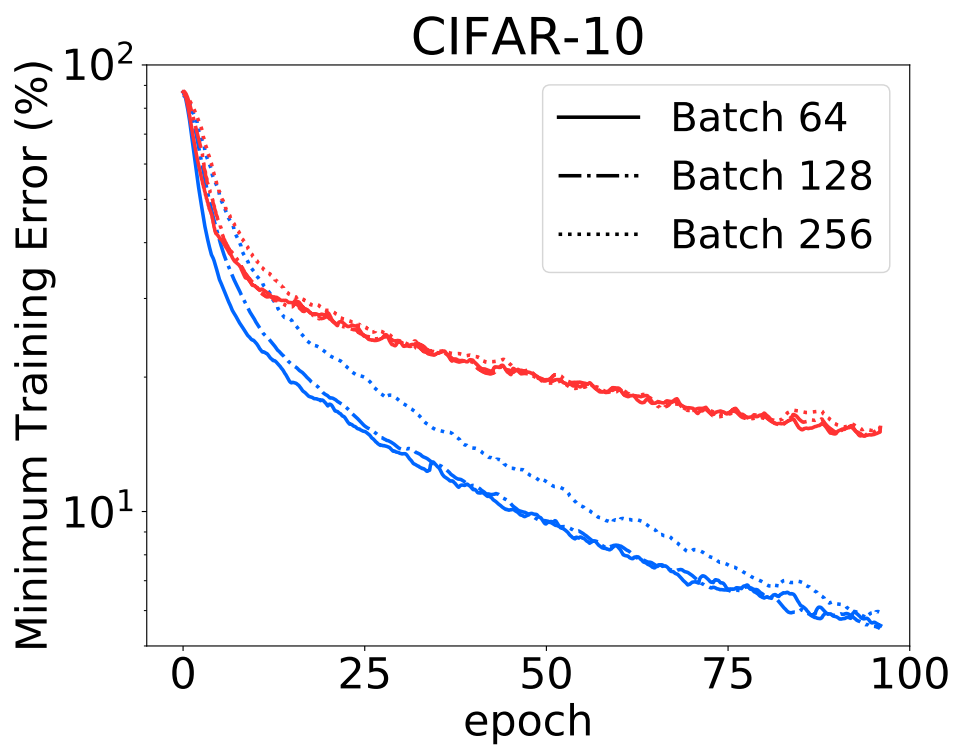

A Non-asymptotic comparison of SVRG and SGD: tradeoffs between compute and speed
SVRG Non-Asymptotic Analysis
Background
SGD can make rapid learning progress by performing updates using subsampled training data, but the noisy updates also lead to slow asymptotic convergence. Several variance reduction algorithms, such as SVRG, introduce control variates to obtain a lower variance gradient estimate and faster convergence. Despite their appealing asymptotic guarantees, SVRG-like algorithms have not been widely adopted in deep learning. The traditional asymptotic analysis in stochastic optimization provides limited insight into training deep learning models under a fixed number of epochs.
Our Contribution
- We show the exact expected loss of SVRG and SGD as a function of iterations and computational cost.
- We discuss the trade-offs between the total computational cost and convergence performance.
- We consider two different training regimes with and without label noise.
- Under noisy labels, the analysis suggests SGD only outperforms SVRG under a mild total computational cost.
- However, SGD always exhibits a faster convergence compared to SVRG when there is no label noise.
- Numerical experiments validate our theoretical predictions on both MNIST and CIFAR-10.
- In particular, the comparison on underparameterized neural networks closely matches with our noisy least squares model prediction.
- Whereas, the effect of overparameterization is captured by the regression model without label noise.
SVRG: inner-outer loop algorithm.
In the outer loop:
- For every $T$ steps, we evaluate a large batch gradient $\overline{\mathbf{g}}=\frac{1}{N} \sum_{i}^{N} \nabla_{\boldsymbol{\theta}^{( m T )}} L_{i}$. where $N \gg b$, and $m$ is the outer loop index.
- We store the parameters at reference points $\boldsymbol{\theta}^{(m T)}$.
In the inner loop: $$\boldsymbol{\theta}^{(m T+t+1)}=\boldsymbol{\theta}^{(m T+t)}-\alpha^{(t)}\left(\hat{\boldsymbol{g}}^{(m T+t)}-\tilde{\boldsymbol{g}}^{(m T+t)}+\overline{\mathbf{g}}\right)$$
where $ \hat{\boldsymbol{g}}^{(m T+t)}=\frac{1}{b} \sum_{i}^{b} \nabla_{\boldsymbol{\theta}^{(m T+t)}} L_{i} $ is the current batch gradient and $ \tilde{\boldsymbol{g}}^{(m T+t)}=\frac{1}{b} \sum_{i}^{b} \nabla_{\boldsymbol{\theta}^{(m T)}} L_{i}$ is the old gradient.
Our Model: The noisy least squares regression model
The input data is d-dimensional, and the output label is generated by a linear teacher model with additive noise:
$$ \left(\boldsymbol{x}_{i}, \epsilon_{i}\right) \sim P_{x} \times P_{\epsilon} ; \quad y_{i}=\boldsymbol{x}_{i}^{\top} \boldsymbol{\theta}^{*}+\epsilon_{i} $$ where $\mathbb{E}\left[\boldsymbol{x}_{i}\right]=\boldsymbol{\mu} \in \mathbb{R}^{d} \text { and } \operatorname{Cov}\left(\boldsymbol{x}_{i}\right)=\Sigma, \mathbb{E}\left[\epsilon_{i}\right]=0, \operatorname{Var}\left(\epsilon_{i}\right)=\sigma_{y}^{2}$.
Assumptions:
- $\mu=\mathbf{0}$.
- $\Sigma$ is diagonal.
- $\boldsymbol{\theta}^{*}=\mathbf{0}$.
Loss Function and Bias-Variance Decomposition:
Under our assumptions, the expected loss can be simplified as a function of the second moment of the iterate.
$$
\begin{aligned}
L\left(\boldsymbol{\theta^{(t)}}\right)=& \frac{1}{2} \mathbb{E}\left[\left(\boldsymbol{x_{i}}^{\top} \boldsymbol{\theta^{(t)}}-\epsilon_{i}\right)^{2}\right]\\
=& \frac{1}{2}\left(\operatorname{tr}\left(\Sigma \mathbb{E}\left[\boldsymbol{\theta^{(t)}} \boldsymbol{ \theta^{(t)}}\right]\right)+\sigma_{y}^{2}\right)\\
=& \frac{1}{2} \operatorname{diag}(\Sigma)^{\top} \operatorname{diag}\left(\mathbb{E}\left[\boldsymbol{\theta}^{(t)} \boldsymbol{\theta}^{(t)^{\top}}\right]\right)+\frac{1}{2} \sigma_{y}^{2}
\end{aligned}
$$
Mini-batch gradients:
$$ \hat{\boldsymbol{g}}^{(t)}=\frac{1}{b} \sum_{i}^{b}\left(\boldsymbol{x}_{i} \boldsymbol{x}_{i}^{\top} \boldsymbol{\theta}^{(t)}-\boldsymbol{x}_{i} \epsilon_{i}\right)=X_{b} X_{b}^{\top} \boldsymbol{\theta}^{(t)}-\frac{1}{\sqrt{b}} X_{b} \boldsymbol{\epsilon}_{b} $$
where $X_{b}=\frac{1}{\sqrt{b}}\left[\boldsymbol{x}_{1} ; \boldsymbol{x}_{2} ; \cdots ; \boldsymbol{x}_{b}\right] \in \mathbb{R}^{d \times b}$ and the target noise vector $\boldsymbol{\epsilon}_{b}=\left[\epsilon_{1} ; \epsilon_{2} ; \cdots ; \epsilon_{b}\right]^{\top} \in \mathbb{R}^{b}$.
Notations and Definitions
$$
\begin{array}{l}{\mathrm{M}(\theta)=\mathbb{E}\left[\boldsymbol{\theta} \boldsymbol{\theta}^{\top}\right], \quad \mathbf{m}(\theta)=\operatorname{diag}\left(\mathbb{E}\left[\boldsymbol{\theta} \boldsymbol{\theta}^{\top}\right]\right)} \\
{\mathrm{C}(\boldsymbol{\theta})=\mathbb{E}\left[\boldsymbol{x} \boldsymbol{x}^{\top} \boldsymbol{\theta} \boldsymbol{\theta}^{\top} \boldsymbol{x} \boldsymbol{x}^{\top}\right]-\Sigma \mathbb{E}\left[\boldsymbol{\theta} \boldsymbol{\theta}^{\top}\right] \Sigma} \\
{V=\alpha^{2} \sigma_{y}^{2} \operatorname{diag}(\Sigma) \\
R=(\mathrm{I}-\alpha \Sigma)^{2}+\frac{\alpha^{2}}{b}\left(\Sigma^{2}+\operatorname{diag}(\Sigma) \operatorname{diag}(\Sigma)^{\top}\right)} \\
{Q=\frac{2 \alpha^{2}}{b}\left(\Sigma^{2}+\operatorname{diag}(\Sigma) \operatorname{diag}(\Sigma)^{\top}\right), \quad P=\mathrm{I}-\alpha \Sigma} \\
{F=\frac{2 \alpha^{2}(N+b)}{N b}\left(\Sigma^{2}+\operatorname{diag}(\Sigma) \operatorname{diag}(\Sigma)^{\top}\right)}\end{array}
$$
The Dynamic of SGD
$$ \mathrm{M}\Big(\boldsymbol{\theta}^{(t+1)}\Big)=\underbrace{(\mathrm{I}-\alpha \Sigma) \mathrm{M}\Big(\boldsymbol{\theta}^{(t)}\Big)(\mathrm{I}-\alpha \Sigma)}_{{1}: \text { gradient descent shrinkage }} + \underbrace{\frac{\alpha^{2}}{b} \mathrm{C}\Big( \mathrm{M}(\boldsymbol{\theta}^{(t)})\Big)}_{ {2}:\text { input noise } } +\underbrace{\frac{\alpha^{2} \sigma_{y}^{2}}{b} \Sigma}_{{3}: \text { label noise }} $$
- The term $1$ leads to an exponential shrinkage of the loss due to the gradient descent update.
- Since we are using a noisy gradient, the second term $2$ represents the variance of stochastic gradient caused by the random input $ X_b $.
- The term $3$ comes from the label noise $ \epsilon_b $.
The expected second moment for SGD
Given the model and our assumptions, we have the second moment of parameter as:
$$ \mathbf{m}\Big(\boldsymbol{\theta}^{(t)}\Big)=R^{t}\left(\mathbf{m}\left(\boldsymbol{\theta}^{(0)}\right)-\frac{(\mathrm{I}-R)^{-1} V}{b}\right)+\frac{(\mathrm{I}-R)^{-1} V}{b} $$
Since $L\left(\boldsymbol{\theta^{(t)}}\right)= \frac{1}{2} \operatorname{diag}(\Sigma)^{\top} \operatorname{diag}\left(\mathbb{E}\left[\boldsymbol{\theta}^{(t)} \boldsymbol{\theta}^{(t)^{\top}}\right]\right)+\frac{1}{2} \sigma_{y}^{2}$, we can draw the exact expression of the expected loss.
The Dilemma for SVRG
SVRG Dynamic under Our Model
$$
\begin{aligned} \mathrm{M}\left(\boldsymbol{\theta}^{(m T+t+1)}\right)=&\underbrace{(I-\alpha \Sigma) \mathrm{M}\left(\boldsymbol{\theta}^{(m T+t)}\right)(\mathrm{I}-\alpha \Sigma)}_{{1}: \text { gradient descent shrinkage }}+\underbrace{\frac{\alpha^{2}}{b} \mathrm{C}\Big(\mathrm{M}(\boldsymbol{\theta}^{(m T+t)})\Big)}_{ 2: \text { input noise } } \\
& + \underbrace{\frac{\alpha^{2} \sigma_{y}^{2}}{N} \Sigma}_{ 3: \text { label noise }} + \underbrace{\alpha^{2} \frac{N+b}{N b} \mathrm{C}\left(\mathrm{M}\left(\boldsymbol{\theta}^{(m T)}\right)\right)}_{ 4: \text {Gvariance due to } \tilde{\mathbf{g}}^{(m T+t)}}\\
& \underbrace{-\frac{\alpha^{2}}{b}\left(\mathrm{C}\Big(\mathrm{M}(\boldsymbol{\theta}^{(m T)}) P^{t}\Big) +\mathrm{C}\Big(P^{t} \mathrm{M}(\boldsymbol{\theta}^{(m T)})\Big)\right).}_{\mathbb{5} \text { Variance reduction from control variate }} \end{aligned}
$$
- First notice that terms ${1}, {2}, {3}$ reappear, contributed by the SGD update.
- The additional terms, ${4}$ and ${5}$, are due to the control variate.
- Observe that the variance reduction term ${5}$ decays exponentially throughout the inner loop, with decay rate $I-\alpha\Sigma$, which is the same term that governs the decay rate of the term ${1}$, hence resulting in a conflict between the two.
- If we want to reduce the term ${1}$ as fast as possible, we would prefer a large learning rate, i.e. $\alpha \to \frac{1}{\lambda_{\max}(\Sigma)}$. But this will also make the boosts provided by the control variate diminish rapidly, leading to a poor variance reduction.
- The term ${4}$ makes things even worse as it will maintain as a constant throughout the inner loop, contributing to an extra variance on top of the variance from standard SGD.
- On the other hand, if one chooses a small learning rate for the variance reduction to take effect, this inevitably will make the decay rate for term ${1}$ smaller, resulting in a slower convergence.
- A good news for SVRG is that the label noise (term ${3}$) is scaled by $\frac{b}{N}$, which lets SVRG converge to a lower loss value than SGD – a strict advantage of SVRG compared to SGD.
The expected second moment for SVRG
Given the model and our assumptions, we have the second moment of parameter as:
$$ \mathbf{m}\left(\boldsymbol{\theta}^{((m+1) T)}\right)=\lambda(\alpha, b, T, N, \Sigma) \mathbf{m}\left(\boldsymbol{\theta}^{(m T)}\right)+\left(\mathrm{I}-R^{T}\right)(\mathrm{I}-R)^{-1} \frac{V}{N} $$
where
$$ \lambda(\alpha, b, T, N, \Sigma)=R^{T}-\left(\sum_{k=0}^{T-1} R^{k} Q P^{-k}\right) P^{T-1}+\left(\mathrm{I}-R^{T}\right)(\mathrm{I}-R)^{-1} F $$
The Numerical Experiments Based on Our Dynamic
In all of our experiments, we compare SVRG and SGD under a fixed computation budget. For every budget, we run 10 leanring rates expentionally varying from 0.1 to 0.001, typically, for SGD. For SVRG, besides turning learning rate, we also choose different pairs of batch size and snapshot interval under a fixed budget. Then, at each step, we plot the minimum loss over these setting. In short, every line in the following plots need to run 10 or more setting for SGD; and 30 or more for SVRG. And the x-axis “epoch” denotes the total computational cost normalized by dataset.
Our Conclusions:
- The case with label noise: The plot demonstrated an explicit trade-off between computational cost and convergence speed.
- a crossing point of between SGD and SVRG appear, indicating SGD achieved a faster convergence speed in the first phase of the training, but converged to a higher loss, for all per-iteration compute cost.
- The per-iteration computational cost does not seem to affect the time crossing point takes place. For all these three costs, the crossing points in the plot are at around the same time: $5.5$ epochs.
- The case of no label noise: Both methods achieved linear convergence, while SGD achieved a much faster rate than SVRG, showing absolute dominance in this regime.
Experiments on Benchmark Datasets
Underparameterized Setting
The results in underparametrized regime corresponds to the analysis with label noise. $ \mathbb{E}{ \boldsymbol{x{i}} \in P{\boldsymbol{x}} } \left[ \left(\boldsymbol{x{i}}^{\top} \boldsymbol{\theta^{(t)}} - \epsilon_{i} \right)^{2} \right] = \mathbb{E}{ \ boldsymbol{X} \in P{ \boldsymbol{X} } } \left[ \frac{1}{N} \sum{ \boldsymbol{x{i}} \in \boldsymbol{X} } \left(\boldsymbol{x_{i}}^{\top} \boldsymbol{\theta^{(t)}} - \epsilon_{i} \right)^{2} \right] $
Logistic Regression on MNIST

MLP-10-10 on MNIST 
Underparametrized CNN on CIFAR-10 
Overparametrized Setting
The results in overparametrized regime corresponds to the analysis without label noise.
Overparametrized MLP on MNIST 
Overparametrized CNN on CIFAR-10 